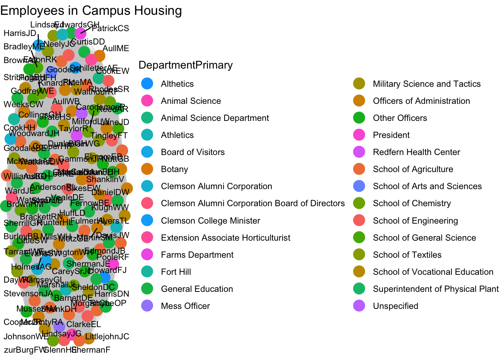
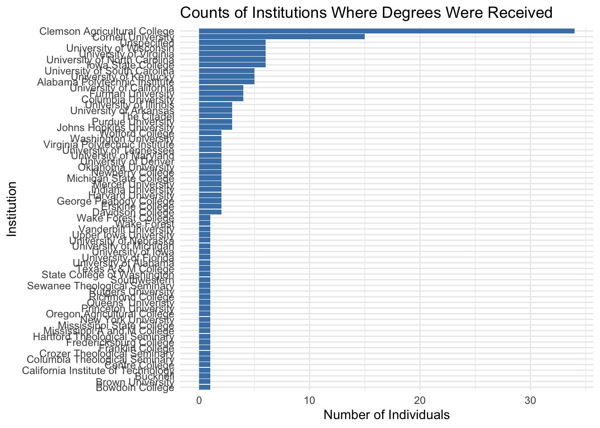
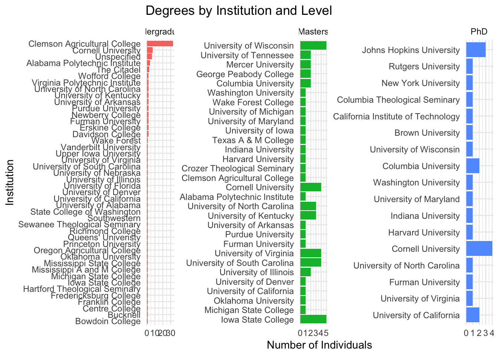
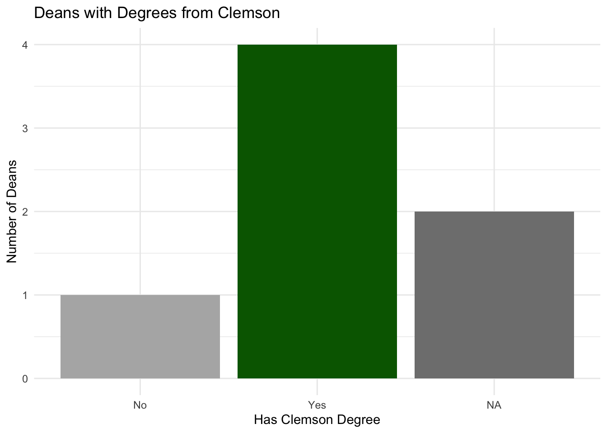
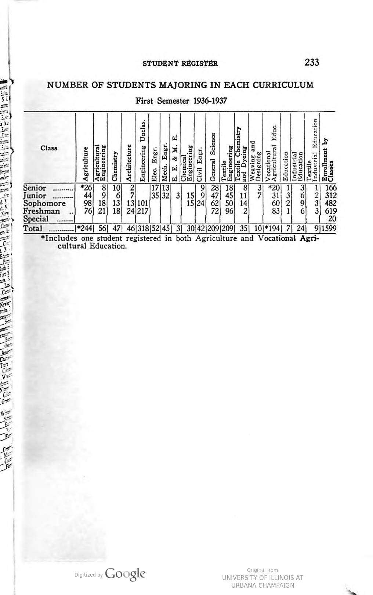

Clemson Family
Historical Context
In the pursuit of creating broad narratives and themes which account for large trends over long periods historians are often hard-pressed to spend time examining individual institutions or people. Increasingly, however, since the cultural and digital turns, personal narratives are often interjected into these larger narratives as a way to create more complete and inclusive histories. These inclusions provide human connections within larger themes of social, political and economic change. This project seeks to provide, not intricate details of lives that contributed to Clemson Agricultural College during the first half of the twentieth century, but rather a close examination of the connections between their lives.
There exists a rich tradition of institutional histories in the historiography of higher education in the United States. Perhaps what sometimes falls through the cracks of historic scholarship are institutional histories done at a high, academic level. The reasons for this gap is may be expressed by Joseph Amago in Rethinking Home regarding his an other historians work with local histories. Often relagate to non-professional historians or historical societies, local histories fail to draw scholars because of the need for “commitment to the micro-landscapes in an era of macro foces” (Amato, 187). Amato calls for a new generation of historians who shed the need for systemization for a commitment to particular histories and who “reject overarching explantions for microhistories, instead staying tru to details, anecdotes, and peculiarities of place…they prefer case studies to academic theory”.
The history of Clemson University has been written in many ways and for various purposes throughout the years. Jerry Reel who has written what is perhaps the seminal history of Clemson University in the High Seminary volumes follows the well-worn tradition of emeritus scholars writing about their institutional homes. Reel’s careful examination of the Board of Trustees, presidents, football program highlights, and the development of the physical spaces of the university provide alumni and fans the opportunity to learn about the decisions and directions that created Clemson University as it exists today. While Dr. Reel has contributed to the telling of Clemson’s history from a scholarly standpoint, a cursory glance at the majority of the published histories reveal that football and personal experiences as students still largely dominate the literature.
While wonderful for fans and alumni, these book do little to position Clemson within the larger themes of southern, race, gender or other widely accepted themes of scholarship. The confirmation of unmarked African American burials at Cemetery Hill in 2020 and the resulting publications by Dr. Rhondda Thomas have greatly expanded Clemson’s history, especially in regards to race. Thomas’ scholarly efforts in Call My Name and Rhetoric, Public Memory, and Campus History illuminate the entirety of Clemson’s history reaching into is antebellum past as a plantation powered by unfree African American labor, to the postbellum construction of college buildings by mostly black convicts lessed to Clemson Agricultural College by the state of South Carolina.
What is perhaps still developing in the history of Clemson are the connections between the various communities. The beautiful new gate installed at the entrance of Cemetery Hill represents the current phase of the project and on-going research initatives part of which is beginning to try and understand the interactions and influences of the various communtities with and on one another. Three ribbons wind their way through the bottom of the gates symbolizing each of the three burial grounds at Cemetery Hill: the original Andrew P. Calhoun plot, the African American burial ground, and Woodland Cemetery. The ribbons symbolize the threads of narrative that occur so visably at Cemetery Hill and that so many historians have worked so hard to tell since the cultural turn.
By beginning to understand the social networks created among the faculty and officers who became Woodland plot assignees after the cemetery’s creation in 1922 we can take another step in the research of understanding the ties that bind Clemson family to itself and how those networks functioned beyond the university.
History of Woodland Cemetery
Woodland Cemetery, on the campus of Clemson University, was created by President Walter Riggs in 1922. Motivated in part by poor professor retention at Clemson Agricultural College, Riggs devised a plan to use land adjacent to the historic Calhoun family burial plot as a faculty and officer cemetery and their families.
The growth of Clemson through the 1950s as evidenced by the building of Memorial Stadium directly adjacent to “Cemetery Hill” and numerous other academic, agricultural and administrative buildings across campus directly corresponds to the family plot assignments and burials in the oldest part of Woodland Cemetery. It was also during this time that the notion of the Clemson family begins to rise in popularity among students, alumni and the local press.
In order to explore the notion of Clemson Family, examining its existance and formation as a network of social currency, the eariest families buried in Woodland will be compared to those who lived in campus housing.
.jpg)
The following family names appear on the 1943 Clemson University Atlas:
Henry
Watkins
Littlejohn
Dargin
Cook
Cody
Feely
Bradley
Neely
Milford
Bryan
Lemaster
Aull
Hunter
Earle
Littlejohn
McCollum
Trively
Anderson
Burley
Elmore
Musser
Cureton
Rosencran
Brock
Harcombe
Lindsay
Carey
Marshall
Sharpe
*Sirrine
*Riggs
*Tillman
*Long
*University buildings (not occupied by families)
The 1943 Atlas provided some notion of the correlation between families that lived in university housing and those who chose to be buried at Woodland, but on April 14th, 2025 Rick Owens, Clemson’s preservation officer, found a map of Clemson created by W.M. Simpson and J.R. Cooper believed to have been created in 1936. The key to the map listed over 200 names of individuals living on campus. This map along with the Clemson Record, Catalog and Announcements for the 1936-1937 academic year are the foundational documents for this project and dataset. The reason for the large discrepancy between the number of names listed on the 1943 map and the 1936 atlas is that the map was printed in Taps and showed a partial map of main campus, according to Rick Owens.
Layers of Connections
The dataset for this project began by documenting people that lived in campus housing as evidenced either by the 1936 map or the 1943 atlas. The dataset was then expanded by recording the people that are recorded in the 1936-37 Clemson Record, Catalog and Announcements. The Record provides detailed information about the officers, faculty and other members of Clemson’s staff such as which department or office employed them, and where they received their undergraduate and graduate degrees.
Because it is difficult to find the same inforamtion for each group of people, not every record is as completely populated as it would be in an ideal project. This is especially true for faculty and other university employees that are not buried in Woodland. Because it then becomes necessary to discover where they went, if they left Clemson, and their burial location in order to locate their obituary or other documents that would provide the same information about their social and civil engagement during their time at Clemson it would require research beyond the scope of this project.
To first understand the connects which define the largest groups in the dataset, visualizations of Clemson employees who lived in campus housing as well as those who are interred in Woodland provide the first layer of connection.
Each employee that appears on the 1936 Clemson Map key is connected by their proximity to one another. To live and work with the same group of people heavily shaped their day-to-day lives and interactions with one another. The differentition becomes in what area they worked.
To futher examine the layers of connections between individual it is helpful to examine the institutions where they received their degrees before coming to Clemson.

It’s no suprise that so many of the employees received degrees from Clemson. To futher illustrate these connections further, however, it is helpful to see what levels of degrees came from which institutions:


To understand the value of a Clemson degree for the men that would become members of the faculty and staff the two preceeding visualizations must work in tandem. While those who were deans without Clemson degrees outnumber those with Clemson degrees, at this time Clemson was only awarding bachelors degrees. (footnote: 1936 record) There may be multiple reasons that Clemson graduates were rising to higher ranks in the school namely, the focus on local agriculture as well as the military training. Possibly, the men coming into faculty and staff positions were more quickly adaptable to the systems and structure of Clemosn Agricultural College. Regardless, the tendency to hire and promote Clemson men over their colleges with degrees, and sometimes more advanced degrees, is a strong influencer in the Clemson Family network.
'data.frame': 195 obs. of 2 variables:
$ ID : chr "AbelR" "AllF" "AndersonRL" "AndrewsFS" ...
$ ClemsonDepartment: chr "Board of Visitors" "Clemson Alumni Corporation Board of Directors" "School of Engineering" "School of Agriculture" ...'data.frame': 195 obs. of 48 variables:
$ ID : chr "AbelR" "AllF" "AndersonRL" "AndrewsFS" ...
$ FamilyPlotName : chr "" "" "" "" ...
$ LastName : chr "Abel" "All" "Anderson" "Andrews" ...
$ Title : chr "" "" "" "" ...
$ FirstName : chr "Robert" "F" "Robert" "Flood" ...
$ MiddleName : chr "" "" "Lovell" "Shields" ...
$ AdditionalName : chr "" "" "" "" ...
$ MaidenName : chr "" "" "" "" ...
$ Suffix : chr "" "" "" "" ...
$ Alias : chr "" "" "" "" ...
$ BirthDate : chr "" "" "" "" ...
$ DeathDate : chr "" "" "" "" ...
$ X1936.7Record : chr "checked" "checked" "checked" "checked" ...
$ X1936HousingMap : chr "" "" "checked" "checked" ...
$ WoodlandBurial : chr "FALSE" "FALSE" "FALSE" "FALSE" ...
$ PlotAssignee : logi NA NA NA NA NA TRUE ...
$ ClemsonHousing : chr "FALSE" "FALSE" "TRUE" "TRUE" ...
$ ClemsonDepartment : chr "Board of Visitors" "Clemson Alumni Corporation Board of Directors" "School of Engineering" "School of Agriculture" ...
$ ClemsonDepartmentNotes : chr "" "" "Associate Professor of Architecture" "Associate Professor of Horticulture" ...
$ ClemsonYearOnset : int NA NA NA NA NA NA 1918 NA NA NA ...
$ ClemsonYearTerminus : int NA NA NA NA NA 1963 NA NA NA NA ...
$ OtherInstitution : chr "" "" "" "" ...
$ ProfessionalMembership1 : chr "" "" "" "" ...
$ ProfessionalMembership2 : chr "" "" "" "" ...
$ ProfessionalMembership3 : chr "" "" "" "" ...
$ ClemsonAffiliatedMembership1: chr "" "" "" "" ...
$ ClemsonAffiliatedMembership2: chr "" "" "" "" ...
$ ClemsonAffiliatedMembership3: chr "" "" "" "" ...
$ ChurchMembership : chr "" "" "" "" ...
$ ChurchRole : chr "" "" "" "" ...
$ SocialMembership1 : chr "" "" "" "" ...
$ SocialMembership2 : chr "" "" "" "" ...
$ SocialMembership3 : chr "" "" "" "" ...
$ SocialMembership4 : chr "" "" "" "" ...
$ CivicMembership : chr "" "" "" "" ...
$ OtherMembership : chr "" "" "" "" ...
$ SocialEventParticipation : chr "" "" "" "" ...
$ ClemsonAwards : logi NA NA NA NA NA NA ...
$ OtherAwards : chr "" "" "" "" ...
$ UndergraduateInstitution : chr "" "" "Princeton University" "Virginia Polytechnic Institute" ...
$ UndergraduateYear : int NA NA 1925 1924 1914 1919 NA 1907 1918 NA ...
$ MastersInstitution : chr "" "" "" "Michigan State College" ...
$ MastersYear : int NA NA NA 1928 1917 1928 NA NA 1929 NA ...
$ PhDInstitution : chr "" "" "" "" ...
$ PhDYear : int NA NA NA NA 1921 NA NA NA NA NA ...
$ ClemsonGraduateYear : int NA NA NA NA NA NA NA NA NA NA ...
$ MilitaryService : chr "" "" "" "" ...
$ Notes : chr "" "" "" "" ...This network is based primarily on the 1936 Record book. It shows the clusters around departments. To futher view their connectedness we add in an additional variable of campus housing.
The final stage of the visualization indicates people buried at Woodland Cemetery. By adding this variable, change over time becomes visable. For the people who appear in the 1936 Record book as employees, there is often a lapse of 40 - 50 years before their death and internment in Woodland. This life-long commitment to Clemson is a key component of Clemson Family.
The size of each department is indicative of the academic focus of the school during this period.

Other layers of connectedness could be explored. Such as individual’s involvement in social and civil organizations.
For Further Research
There are hundreds of additional names listed in the 1936-37 Clemson Record, Catalog and Announcements. Instructors, Agricultural Experiment Station staff, Home Demonstration Agents as well as the black